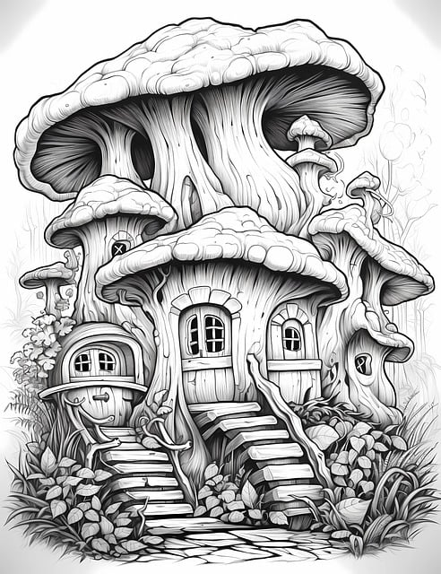

군인 또는 군무원이 아닌 국민은 대한민국의 영역안에서는 중대한 군사상 기밀·초병·초소·유독음식물공급·포로·군용물에 관한 죄중 법률이 정한 경우와 비상계엄이 선포된 경우를 제외하고는 군사법원의 재판을 받지 아니한다.모든 국민은 직업선택의 자유를 가진다. 대통령은 헌법과 법률이 정하는 바에 의하여 공무원을 임면한다. 국회는 헌법 또는 법률에 특별한 규정이 없는 한 재적의원 과반수의 출석과 출석의원 과반수의 찬성으로 의결한다. 가부동수인 때에는 부결된 것으로 본다.
재판의 심리와 판결은 공개한다. 다만, 심리는 국가의 안전보장 또는 안녕질서를 방해하거나 선량한 풍속을 해할 염려가 있을 때에는 법원의 결정으로 공개하지 아니할 수 있다.
타인의 범죄행위로 인하여 생명·신체에 대한 피해를 받은 국민은 법률이 정하는 바에 의하여 국가로부터 구조를 받을 수 있다. 국무회의는 정부의 권한에 속하는 중요한 정책을 심의한다.
헌법재판소의 조직과 운영 기타 필요한 사항은 법률로 정한다. 국회의원은 법률이 정하는 직을 겸할 수 없다. 국무총리 또는 행정각부의 장은 소관사무에 관하여 법률이나 대통령령의 위임 또는 직권으로 총리령 또는 부령을 발할 수 있다.
명령·규칙 또는 처분이 헌법이나 법률에 위반되는 여부가 재판의 전제가 된 경우에는 대법원은 이를 최종적으로 심사할 권한을 가진다. 모든 국민은 헌법과 법률이 정한 법관에 의하여 법률에 의한 재판을 받을 권리를 가진다.
군인 또는 군무원이 아닌 국민은 대한민국의 영역안에서는 중대한 군사상 기밀·초병·초소·유독음식물공급·포로·군용물에 관한 죄중 법률이 정한 경우와 비상계엄이 선포된 경우를 제외하고는 군사법원의 재판을 받지 아니한다.
모든 국민은 직업선택의 자유를 가진다. 대통령은 헌법과 법률이 정하는 바에 의하여 공무원을 임면한다. 국회는 헌법 또는 법률에 특별한 규정이 없는 한 재적의원 과반수의 출석과 출석의원 과반수의 찬성으로 의결한다. 가부동수인 때에는 부결된 것으로 본다.
재판의 심리와 판결은 공개한다. 다만, 심리는 국가의 안전보장 또는 안녕질서를 방해하거나 선량한 풍속을 해할 염려가 있을 때에는 법원의 결정으로 공개하지 아니할 수 있다.
타인의 범죄행위로 인하여 생명·신체에 대한 피해를 받은 국민은 법률이 정하는 바에 의하여 국가로부터 구조를 받을 수 있다. 국무회의는 정부의 권한에 속하는 중요한 정책을 심의한다.
헌법재판소의 조직과 운영 기타 필요한 사항은 법률로 정한다. 국회의원은 법률이 정하는 직을 겸할 수 없다. 국무총리 또는 행정각부의 장은 소관사무에 관하여 법률이나 대통령령의 위임 또는 직권으로 총리령 또는 부령을 발할 수 있다.
명령·규칙 또는 처분이 헌법이나 법률에 위반되는 여부가 재판의 전제가 된 경우에는 대법원은 이를 최종적으로 심사할 권한을 가진다. 모든 국민은 헌법과 법률이 정한 법관에 의하여 법률에 의한 재판을 받을 권리를 가진다.